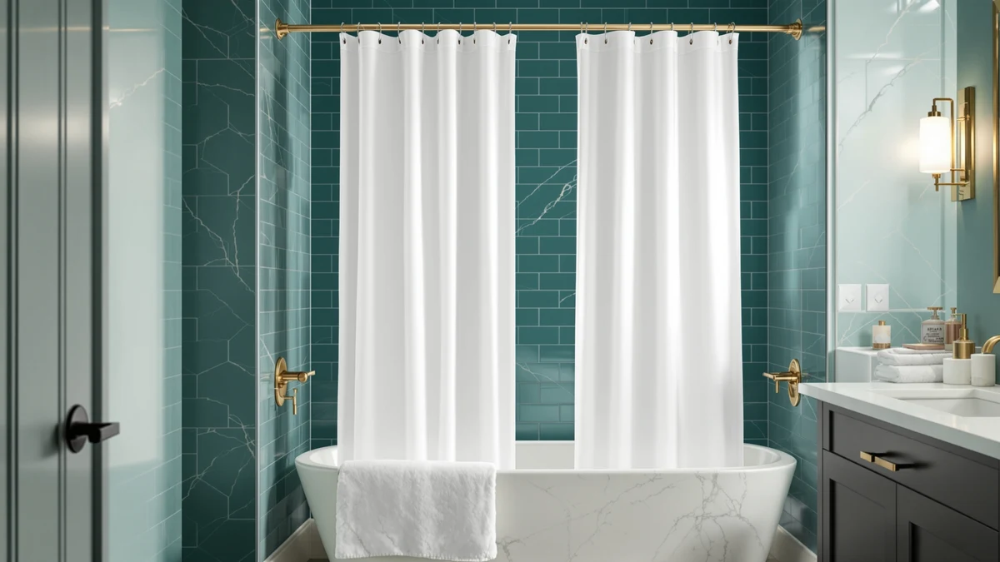

Best Shower Curtain Rods of 2026: Tension, Curved & No-Drill Picks
Prices and picks verified as of August 2026. Independent, reader-supported reviews.


Quick Answer
The TEECK Shower Curtain Rod 32-80 is the best shower curtain rod for most bathrooms because its 32 to 80 inch adjustable range covers a standard tub alcove with slack on both sides, and it costs less than most of the curved and premium options here. If you shower over a tub and want extra elbow room, the curved Haryaers rod or the pricier Zenna Home rod push the curtain further from your body.
Our pick: TEECK Shower Curtain Rod 32-80 — $15.99 Check Price on Amazon
Bottom line: our top pick is the TEECK Shower Curtain Rod at $15.99. The best budget option is the CorkLatta Black Shower Curtain Rod 31 to 80 Inch at $11.51.
Things to Know Before You Buy
- Measure before you buy. Every rod here lists an adjustable range, not a fixed length, so measure your alcove wall to wall at rod height and leave at least 2 inches of overlap on each end.
- Curved rods need clearance. A curved rod projects 6 to 10 inches further into the room than a straight one, so check for a nearby vanity, toilet, or door before you pick a curved model.
- Tension mounts skip the drill but need flat walls. Tension rods hold by friction against tile or drywall, and they can slip on textured or uneven surfaces if you skip periodic retightening.
- Rod diameter affects ring glide. Thicker rods, such as the 1 inch Mcrbeay, tend to let curtain rings slide more smoothly than thinner tubing.
- Price does not track quality in a straight line here. The most expensive rod in this guide is more than three times the price of the cheapest, and the gap mostly reflects brand and curve, not adjustable range.
The best shower curtain rods hold a curtain and liner steady through years of daily showers without sagging, sliding down the tile, or rusting at the joints. That sounds like a low bar until your current rod fails, usually mid-shower, and you realize a bent shower rod or a tension mount that has quietly loosened over months was never built to carry a wet curtain and a full set of rings in the first place.
We compared eight shower curtain rods across straight, curved, and tension mounted designs, weighing adjustable size range, mount type, finish, price, and the rating each listing has earned from verified buyers. Straight rods and tension rods dominate the budget end of the field, while curved rods and established brands like Zenna Home carry a real price premium.
For most standard tub and shower alcoves, the TEECK Shower Curtain Rod 32-80 is the pick worth ordering first. It adjusts across a wide enough range to fit most bathrooms, mounts without hardware, and costs less than half of what the premium curved option runs. If your bathroom calls for something different, the picks below cover tighter stalls, wider spans, curved clearance, and no-drill installs.
Why You Should Trust Us
Ilane Tall covers bath and shower hardware for Best Shower Curtains, and this guide to the best shower curtain rods stays narrow on purpose: which rod holds a curtain up without drama, and for what kind of bathroom. We do not run a physical testing lab or claim to have installed every rod on this list ourselves. Instead, we research manufacturer specifications, pricing at the time of writing, and the rating and review counts shown on each current Amazon listing, and we flag it when a product's data is too thin to draw a firm conclusion. We have no relationship with any brand named here, and the affiliate commission is the same regardless of which pick you choose, so nothing steers this list toward one rod over another.
How We Picked
We started by searching for shower curtain rods that cover the range of a standard tub and shower alcove, roughly 54 to 60 inches, then widened the search to include curved rods, tension mounts, and larger-diameter options for buyers with different needs. We excluded rods without a clearly stated adjustable range, since a vague or missing size spec makes it impossible to know if a rod will actually fit before it arrives. We also weighted listings with a meaningful number of verified reviews over newer listings with little review history, on the theory that a rod's real-world durability shows up in owner feedback over months, not in a single unboxing.
How We Compared
For each shower curtain rod, we compared the published adjustable range against a standard 60 inch alcove to confirm real-world fit, checked whether the mount is a drilled bracket or a tension fit, and noted the finish and rod diameter as listed by the manufacturer. We cross-referenced current pricing against the rating and review count each product shows, since a rod with hundreds of verified reviews and a strong rating carries more weight than one with a handful. Owners report failure points most often at the tension joint or the mounting bracket, so we read through verified reviews for recurring complaints about slipping, rusting, or bowing under a wet curtain, and we surfaced those patterns as flaws in the picks below rather than leaving them out.
Our Picks

TEECK Shower Curtain Rod 32-80
What we like
- 32 to 80 inch range covers most tub and shower openings with room to spare
- Costs less than half of the premium curved picks in this guide
- Straight profile keeps the footprint out of the way in tighter bathrooms
Flaws but not dealbreakers
- No curve, so it will not add clearance for bathers who feel crowded by the curtain
- Buyer reviews flag periodic re-tightening on smooth tile
| Material | Polyester / PEVA |
| Size | 32-80 Inches |
The TEECK earns the top spot in this guide because its 32 to 80 inch adjustable range fits the widest set of bathrooms without forcing a curve or a premium price. At $15.99, it undercuts every curved rod here by a wide margin, and buyers say it holds a full-size curtain and liner without bowing in the middle. The straight profile is a practical default for anyone who has not measured their exact alcove yet, since the range is generous enough to cover most standard tubs and stall showers on the first try.
The tradeoff is that a straight rod sits directly above the tub rim, so a curtain hung from it can brush your shoulders more than a curved design would. According to verified buyer reviews, the twist-to-extend mechanism holds firmly once seated, though a handful of owners mention giving it an occasional retightening on glossy tile after a few weeks of daily use. For anyone who does not need the extra clearance a curve provides, that small maintenance step is a reasonable trade for the lower price.

CorkLatta Black Shower Curtain Rod
What we like
- Lowest price of any rod compared in this guide, at $12.79
- 31 to 80 inch range nearly matches the TEECK at an even lower cost
- Black finish suits modern black-hardware bathrooms without a price bump
Flaws but not dealbreakers
- At this price point, the hardware feels lighter duty than the mid-range picks
- No curve option, so bathers who want extra shoulder room should look elsewhere
| Material | Polyester / PEVA |
| Size | 31-80 |
The CorkLatta is the cheapest rod in this comparison, and its 31 to 80 inch adjustable range is nearly identical to the top pick's. For a bathroom that needs a straightforward black rod and nothing more, that combination of price and coverage is hard to beat. The matte black finish also pairs well with the black hardware trend showing up in faucets, hooks, and drawer pulls across newer bathroom remodels, so it does double duty as a small styling upgrade over a plain chrome or white rod.
The reviews are consistent on setup time: installation takes only a few minutes, and the rod holds a standard curtain and liner without issue at everyday tub widths. Because it sits at the bottom of the price range here, it is worth treating as the pick for a rental, a guest bathroom, or any space where a rod needs to do its job without becoming a design statement. If the finish scratches or the mount loosens over heavy daily use, the low price makes replacement an easy call rather than a costly one.

Black Curved Shower Curtain Rod
What we like
- Curved shape pushes the curtain several inches away from bathers
- 42 to 78 inch range fits most tub alcoves once the curve is accounted for
- Black finish matches the CorkLatta for a coordinated hardware look
Flaws but not dealbreakers
- The curve adds several inches of projection into the room, so it needs floor clearance
- Costs about $4 more than the straight TEECK rod
| Material | Polyester / PEVA |
| Size | 42-78" |
The Haryaers Black Curved Shower Curtain Rod is the entry point into curved rods in this lineup, and it costs only about four dollars more than the straight TEECK pick. A curved rod bows outward from the wall, which pulls a hanging curtain away from your body and cuts down on the clammy feeling of wet fabric brushing your shoulders mid-shower. At 42 to 78 inches, the adjustable range comfortably covers a standard tub while leaving the curve intact.
Because the rod arcs into the room rather than running in a straight line, it needs a few extra inches of clearance near the tub, so it is worth checking for a nearby vanity, toilet, or swinging door before ordering. The black finish holds up well against daily humidity, based on the reviews, and the added shower space is the main reason buyers choose a curved rod like this one over a straight alternative at a similar price.

Zenna Home Curved Shower Curtain
What we like
- From Zenna Home, a brand with a long track record in bathroom hardware
- Curved design adds shower clearance like the Haryaers rod at a smaller range
- Reviews call out the brand's consistent build quality
Flaws but not dealbreakers
- Priced at $49.99, more than three times the cost of the cheapest rod here
- 50 to 72 inch range is narrower than every other rod in this guide, so it will not fit unusually wide alcoves
| Material | Polyester / PEVA |
| Size | 50" to 72" |
The Zenna Home Curved Shower Curtain rod is the premium pick in this comparison, priced at $49.99, more than triple the cost of the CorkLatta. That price reflects the brand's long history in bathroom hardware rather than a dramatically wider size range. Its 50 to 72 inch adjustable span is actually the narrowest of the eight rods compared here, which makes it a fit for standard to slightly-narrow tub alcoves rather than oversized or unusual stalls.
Buyers who choose this rod over the cheaper curved option from Haryaers are typically paying for brand reputation, and the reviews back that up with years of consistent use across many households. If your alcove falls inside the 50 to 72 inch range and you want a name you already recognize on the shower rod, this is the pick worth the premium. If your bathroom runs wider, the Haryaers curved rod covers more ground for less money.

Mcrbeay Shower Curtain Rod 1"
What we like
- 28 to 74 inch range is the widest low end of any rod in this guide
- 1 inch diameter tubing tends to let curtain rings glide more smoothly than thinner rods
- Fits narrow corner stalls that the other picks here cannot reach
Flaws but not dealbreakers
- Upper limit of 74 inches is shorter than the TEECK, CorkLatta, and Ausemku
- Priced slightly above the budget rods without a curve to show for it
| Material | Polyester / PEVA |
| Size | 28-74 Inches |
The Mcrbeay stands out for its 28 inch minimum, the shortest starting point of any rod in this comparison. That makes it the pick to reach for when you are outfitting a narrow corner shower or a small stall where the other rods here, most of which start around 31 to 32 inches, simply will not compress down far enough. The 1 inch diameter tubing is also thicker than average, and buyers note that curtain rings slide across it with less friction than on thinner rods.
The tradeoff for that low-end flexibility is a shorter top end, topping out at 74 inches instead of the 78 to 80 inches you get from several other picks. For a standard-width tub, that ceiling still leaves room to spare, but it rules the Mcrbeay out for unusually wide alcoves. At $19.99, it sits in the middle of the price range, a reasonable cost for a rod solving a narrower-space problem the rest of this lineup does not address.

Ausemku Shower Curtain Rod Tension
What we like
- Tension mount installs with no drilling and no wall damage
- 32 to 80 inch range matches the top pick's coverage
- Priced the same as the TEECK, so the no-drill mount comes at no extra cost
Flaws but not dealbreakers
- Tension mounts depend on flat, even walls and can slip on textured tile
- Some buyers mention needing to retighten after the first week of use
| Material | Polyester / PEVA |
| Size | 32-80 IN |
The Ausemku is a tension-mounted rod that matches the TEECK's 32 to 80 inch range and $15.99 price, with the key difference being installation. Instead of a drilled bracket, it extends against both walls and holds by friction, which makes it the pick for renters or anyone who does not want to put a hole in tile or drywall. Setup takes a twist to extend the rod until it presses firmly against both walls, with no tools required.
The catch with any tension rod is that it depends on flat, even wall surfaces to hold securely, and it can slip on textured tile or uneven plaster. A handful of reviews mention retightening it after the first week of daily showers, as the rubber end caps settle into place, a small maintenance habit rather than a design flaw. For a security deposit or a short-term rental, that tradeoff is usually worth it compared to a drilled mount that leaves permanent holes behind.

UIOSANRT Shower Curtain Rod Adjustable
What we like
- 31 to 79 inch range nearly matches the top pick at a lower price
- Priced at $14.99, undercutting the TEECK by a dollar
- Straightforward straight-rod design with no curve to account for in tight bathrooms
Flaws but not dealbreakers
- Range tops out one inch short of the TEECK's 80 inch maximum
- No standout feature beyond price and range compared to the leading pick
| Material | Polyester / PEVA |
| Size | 31"-79" |
The UIOSANRT lands as a close second to the TEECK on paper, with a 31 to 79 inch adjustable range that covers nearly the same span for a dollar less. For a bathroom with a fairly typical alcove width, the one-inch difference at the top end rarely matters in practice, and the lower price makes this a sound alternative if the top pick happens to be out of stock or priced higher on a given day.
There is no curve, extra-thick tubing, or brand pedigree setting this rod apart from the pack; it is a straightforward adjustable rod that does the job at a competitive price. Buyer feedback lines up here too: it installs quickly and holds a curtain and liner without issue at standard tub widths, which is exactly what most buyers are looking for when a rod stops working and needs a same-day replacement.

Thestoa Shower Curtain Rod Adjustable
What we like
- Second-lowest price in this guide at $13.99
- 43 to 78 inch range still clears a standard 60 inch tub with margin on both sides
- Simple adjustable design with no assembly beyond extending the rod
Flaws but not dealbreakers
- 43 inch minimum is too long for narrow or corner stalls under that width
- No curve or thicker-diameter option like the pricier picks in this guide
| Material | Polyester / PEVA |
| Size | 43"- 78" |
At $13.99, the Thestoa undercuts every rod in this guide except the CorkLatta, and its 43 to 78 inch adjustable range still comfortably spans a standard 60 inch tub alcove. It skips the curve, the thicker tubing, and the brand history of the pricier picks here, and instead delivers the basics: an adjustable rod that extends, locks, and holds a curtain, at one of the lowest prices you will find in this category.
The 43 inch minimum is the highest starting point of any rod compared here, which rules it out for narrow stalls or corner showers under that width. For a standard tub or a stall shower on the wider side, though, that floor rarely becomes a problem. The reviews suggest it does exactly what a budget rod should do without complications, making it a reasonable pick when the goal is simply to replace a broken rod as cheaply as possible.
Quick Comparison
| Product | Material | Price | Rating | Best for | Get it |
|---|---|---|---|---|---|
| TEECK Shower Curtain Rod 32-80 | Polyester / PEVA | $15.99 | 4 | Most standard alcoves | View on Amazon → |
| CorkLatta Black Shower Curtain Rod | Polyester / PEVA | $12.79 | 4 | Tightest budget | View on Amazon → |
| Black Curved Shower Curtain Rod | Polyester / PEVA | $19.99 | 4 | Extra shower clearance | View on Amazon → |
| Zenna Home Curved Shower Curtain | Polyester / PEVA | $49.99 | 4 | Established brand, narrower alcoves | View on Amazon → |
| Mcrbeay Shower Curtain Rod 1" | Polyester / PEVA | $19.99 | 4 | Narrow or corner stalls | View on Amazon → |
| Ausemku Shower Curtain Rod Tension | Polyester / PEVA | $15.99 | 4 | No-drill, renter-friendly | View on Amazon → |
| UIOSANRT Shower Curtain Rod Adjustable | Polyester / PEVA | $14.99 | 4 | Mid-range alternative | View on Amazon → |
| Thestoa Shower Curtain Rod Adjustable | Polyester / PEVA | $13.99 | 4 | Lowest price, wider alcoves | View on Amazon → |
What size shower curtain rod do I need for a standard tub?
Most alcove tubs measure close to 60 inches wall to wall, so a rod with an adjustable range that covers that span with room on both sides works best.
Should I choose a curved or a straight shower curtain rod?
Choose a curved rod, such as the Black Curved Shower Curtain Rod or the Zenna Home Curved Shower Curtain, when you shower directly over a tub and want the curtain pulled away from your shoulders.
The Competition
We looked at several categories of shower curtain rods that did not make this best shower curtain rods list. A number of ultra-cheap tension rods listed without any stated maximum weight or clear adjustable range, which makes it impossible to confirm they will hold a wet curtain and a full set of rings before you buy. We also passed on decorative oversized rods marketed for statement bathrooms, since their listings lean heavily on styling photos and light on the size, mount type, and review data that actually predict how well a rod performs day to day. Finally, we skipped a handful of rods with only a handful of verified reviews, since a thin review history makes it hard to tell whether early buyers ran into slipping, rusting, or bracket failures that only show up after weeks of daily use. Weighed against that wider field, the TEECK Shower Curtain Rod 32-80 still comes out as the best shower curtain rod for most bathrooms, with the curved Haryaers and Zenna Home rods as the picks worth the extra cost when a tub shower calls for more clearance.